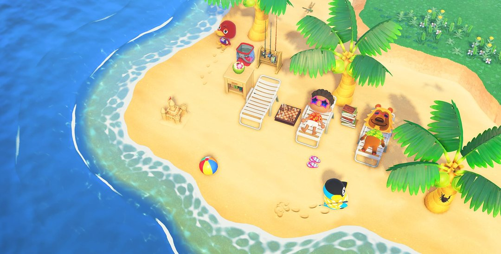

なつのかいがらの季節：6月〜8月、浜辺を歩いて拾おう
3か月間の浜辺の素材：拾い方、DIYレシピの入手先、家具9種類の素材を1つの表に
夏の浜辺には、ふだんは見かけないかいがらが打ち上げられます。それが、なつのかいがらです。北半球は6月1日〜8月31日、南半球は12月1日〜翌年2月末で、夏のあいだずっと拾えます。
なつのかいがらからは9種類のDIYが作れ、ほとんどが海がテーマの壁と床です。みなみのうみなかべ、すいちゅうのかべがみ、うみのそこのゆか、みなものゆか、それにかいがらのリース、なつのかいがらのラグなど。全部作るとなつのかいがらが36個必要で、いくつかのレシピでは普通の貝やサンゴも使います。

夏の浜辺（画像：任天堂、Nookipedia より）
01いつ拾える？
日付はゲーム内の時間です。南半球は北半球より半年遅れます。
| 半球 | 開始 | 終了 |
| 北半球 | 6月1日 | 8月31日 |
| 南半球 | 12月1日 | 2月28日（うるう年は29日） |
南半球のなつのかいがらの季節は年をまたぎ、12月から翌年2月まで続きます。途中で、クリスマス前後のオーナメントの季節（12月15日〜1月6日）とも重なります。
02拾い方
なつのかいがらは、ふだんの貝と同じように浜辺の砂の上に落ちています。近づいて拾うだけで、道具はいりません。毎日浜辺をひと回りして、見つけたら拾いましょう。
なつのかいがらは1個600ベルで、さくらのはなびらやもみじのはっぱなど200ベルの季節素材よりかなり高く売れますが、家具を作るならまずは取っておきましょう。ポケットの1枠には10個まで重ねられます。
普通の貝も用意しておこう
この季節のDIYレシピには、普通の貝が必要なものもあります。かいがらのリースはエビスガイ、サンドダラー、サンゴ、シャコガイ、タカラガイが各1個。うみのそこのゆかとすいちゅうのかべがみはサンゴがそれぞれ3個と5個。かいがらポシェットはシャコガイが2個。これらの貝は1年中浜辺に落ちているので、ふだん拾ってもすぐに売らないようにしましょう。
ほしのすなはまのゆかには、ベースとして「すなはまのゆか」も1つ必要です。すなはまのゆか自体も先に作っておく必要があります。
ヒントなつのかいがらは家の収納にしまえます。季節が終わる前に多めに集めてしまっておけば、季節が過ぎても作れます。この季節のDIYレシピを覚えきれなくても大丈夫。あとで覚えたときに取り出して使いましょう。
03DIYレシピの入手先
いちばん大きいのはふうせんです。なつのかいがらの季節に飛んでくるふうせんを撃ち落とすと、この季節のDIYレシピが落ちてきます。この季節のレシピを全部覚えるまで出続けます。
次に季節の初日の案内所。北半球は6月1日、南半球は12月1日に、たぬきちかしずえが「かいがらのリース」のDIYレシピをくれます。もらえるのは初日だけです。
3つ目はかっぺいのボートツアーです。下で説明します。
逃してしまったら：かっぺいの船で取り戻す
桟橋のかっぺいは、1日1回、1,000マイルで海へ連れ出してくれます。ときどき季節が止まったままの島に着くことがあり、なつのかいがらの島もその1つで、季節の島はそれぞれ確率3%ほどです。その島では浜辺でなつのかいがらが拾え、浜辺のメッセージボトルにこの季節のDIYレシピが入っていることもあります。
確率は高くないので、運だめし程度に考えておきましょう。また、自分の島でこの季節を一度経験していないと、その島には連れていってもらえません。ホテルの1つ目のVIPルームをコーディネートすると、かっぺいは1日にもう1回（ホテルチケット100枚）船を出してくれるようになり、当たるチャンスも少し増えます。
04DIYレシピ9種類の一覧
| DIYレシピ | 素材 |
| かいがらのリース 季節の初日に案内所でもらえる | なつのかいがら1、エビスガイ1、サンドダラー1、サンゴ1、シャコガイ1、タカラガイ1 |
| みなみのうみなかべ | なつのかいがら5 |
| すいちゅうのかべがみ | なつのかいがら3、サンゴ5 |
| うみのそこのゆか | なつのかいがら3、サンゴ3 |
| みなものゆか | なつのかいがら6 |
| ほしのすなはまのゆか | なつのかいがら3、すなはまのゆか1 |
| なつのかいがらのラグ Ver.1.6で追加 | なつのかいがら6 |
| かいがらポシェット | シャコガイ2、なつのかいがら6 |
| かいがらのステッキ | なつのかいがら3、ほしのかけら3 |
9種類を全部作ると、なつのかいがら36個、サンゴ9個、シャコガイ3個、ほしのかけら3個、エビスガイ・サンドダラー・タカラガイ各1個、それにすなはまのゆかが1つ必要です。
05まず作りたいもの
かいがらのリース：初日にもらえるレシピ。壁にかける貝のリースで、6種類の貝が1個ずつ必要です。そろえるのに少し時間がかかるので、季節の早いうちから集め始めましょう。
すいちゅうのかべがみ＋うみのそこのゆか：壁と床のセットで、部屋が海の底に変わります。2つ合わせてなつのかいがら6個とサンゴ8個が必要です。
みなみのうみなかべ、みなものゆか：なつのかいがら（5個、6個）だけでほかの素材がいらないので、いちばんそろえやすいレシピです。
なつのかいがらのラグ：なつのかいがら6個で作れ、海辺にも部屋にも合います。
かいがらのステッキ：この季節の魔法のステッキ。ひと振りすると、登録したコーディネートに着替えられます。
06アップデートでの変化
なつのかいがらのラグのDIYレシピはVer.1.6で追加されました。かっぺいのボートツアーはVer.2.0で、ホテルの1つ目のVIPルームをコーディネートすると1日もう1回乗れる仕組みはVer.3.0で追加されました。
Nook Circle · App Store で「Nook Circle」を検索